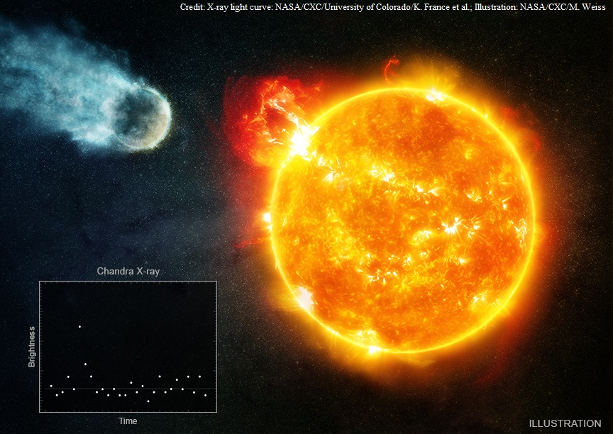

At the early stage of star formation, molecular clouds and prestellar cores can be studied with the observation of thermal dust emission in the far-infrared (FIR) and millimeter (mm) wavelength. Consequently, the estimated core properties (mass, density, stability, etc.) derived from these observations are strongly influenced by the assumed dust properties (temperature, spectral index, composition, size distribution, etc.). As part of the Herschel Galactic Cold Cores project, we combine FIR to mm wavelength observations of more than 10 prestellar and protostellar cores at different galactic environments with dust models and radiative transfer modeling to better constrain the dust properties, improve the determination of prestellar core properties and investigate grain coagulation.
Work in progress...

Searching for habitable planets around M dwarfs has drawn increasing attention due to their good detectability in recent years. However, the strong UV and X-ray flares of some M dwarfs might cause severe atmospheric escape of the planet and prohibit the emergence of life, which motivates a comprehensive study of M dwarf activity levels. We have constructed volume-complete samples of G-K-M stars in the solar neighborhood and used X-ray data from Chandra, XMM-Newton, eROSITA, and ROSAT. We found that the X-ray activity levels of the majority of nearby M dwarfs no later than M6 are actually comparable with G-type stars. The X-ray irradiation of habitable-zone planets around these stars should therefore not present a specific problem for their habitability.
Zhu & Preibisch (2025)